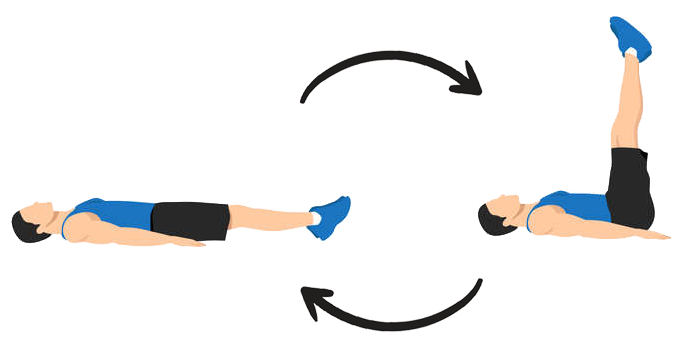
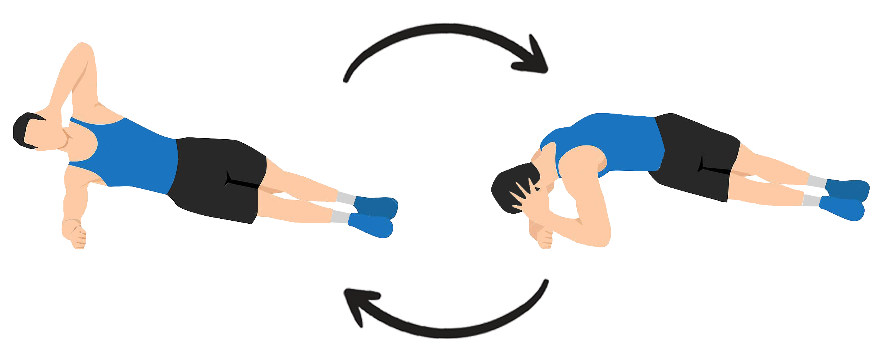
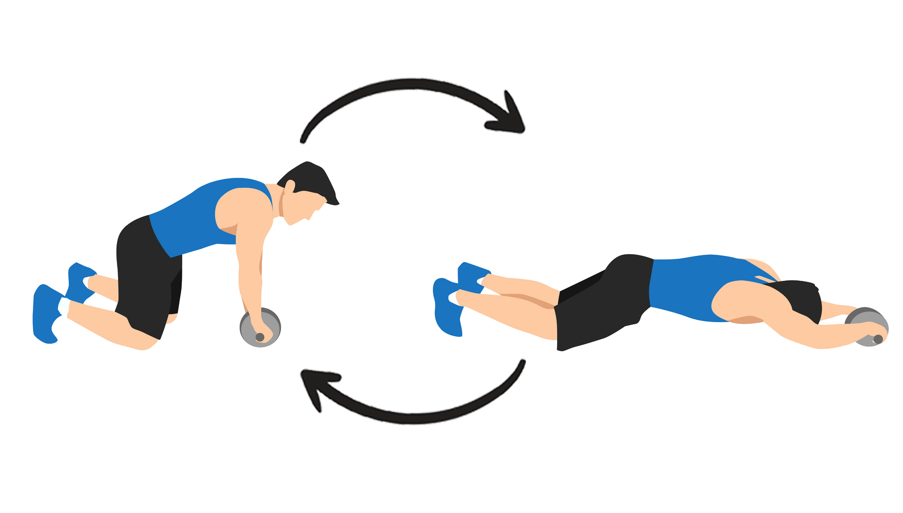
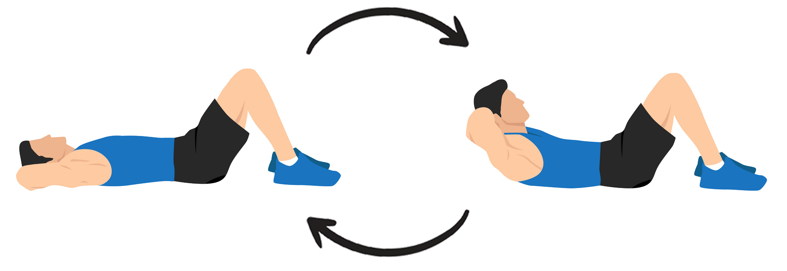
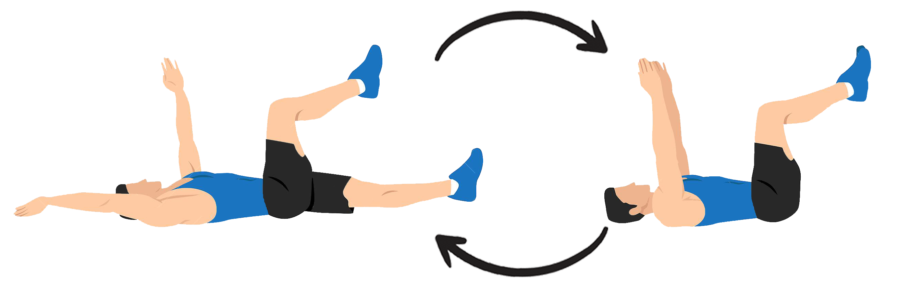

Leg raises
Acesta este un exercițiu mai provocator. Fiți conștienți de faptul că ridicarea picioarelor vă poate face cu ușurință să vă ridice partea inferioară a spatelui de pe sol pentru a vă ajuta să compensați. Concentrați-vă pe recrutarea abdomenului pentru a face treaba.
- Întindeți-vă pe spate pe un covoraș, cu brațele în jos pe părțile laterale și cu palmele pe pământ sau sub fund pentru un sprijin suplimentar.
- Recrută-ți miezul pentru a-ți ridica picioarele drept până când corpul tău formează un unghi de 90 de grade.
- Coborâți încet picioarele înapoi la pământ.
- Completați 10 repetări pentru 3 seturi.

Side plank
- Întinde-te pe partea dreaptă și sprijină-ți partea superioară a corpului cu antebrațul. Îndoiți genunchii la un unghi de 45 de grade și stivuiți-vă piciorul stâng deasupra dreptului. Întinde brațul stâng spre cer.
- Ține-ți picioarele în contact. Folosind oblic, trage-ți șoldul stâng spre cer, îndreptându-ți picioarele pe măsură ce mergi.
- Țineți această poziție până când obosiți și nu vă puteți păstra forma corectă.

Ab rollout
- Așezați rola abdominală pe podea și țineți-o cu ambele mâini, cu palmele îndreptate spre tine. Îngenunchează pe podea.
- Rotiți încet cilindrul abdominal, întinzându-vă corpul înainte. Coboară cât poți de departe fără să atingi podeaua cu corpul. Asigurați-vă că vă păstrați miezul strâns, astfel încât spatele să nu se balanseze. Respirați în timpul acestei porțiuni a mișcării.
- După o pauză în poziția întinsă, angajați-vă miezul și expirați în timp ce începeți să vă trageți înapoi la poziția inițială. Strângeți-vă miezul aici pentru a evita orice stres pe partea inferioară a spatelui.

Overhead Crunch
- Întinde-te pe spate cu brațele întinse drept deasupra capului, astfel încât corpul tău să formeze o linie dreaptă.
- Îndoaie genunchii și ține picioarele plate pe podea, apoi - ținând brațele blocate - contractează-ți abdomenul pentru a-ți ridica umerii de pe podea.

Dead bug
- Lăsați umerii și partea inferioară a spatelui să cadă greu pe podea.
- Trageți umerii în jos, departe de urechi. Pentru a ajunge în poziția inițială, ridicați mâinile astfel încât coatele să fie deasupra umerilor, cu pumnii îndreptați unul spre celălalt.
- Ridicați picioarele astfel încât genunchii să fie direct peste șolduri.
- La expirare, coborâți încet brațul drept și piciorul stâng până când sunt chiar deasupra podelei.
- La o inspirație, aduceți-le înapoi în poziția inițială.
- Repetați pe partea opusă.
- Faceți 3-5 seturi de 15-20 de repetări.
